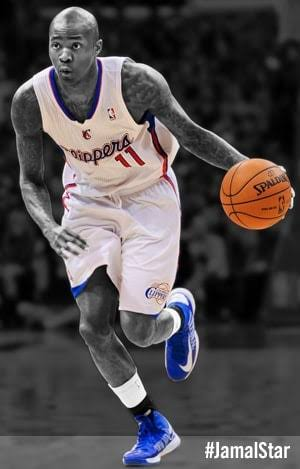
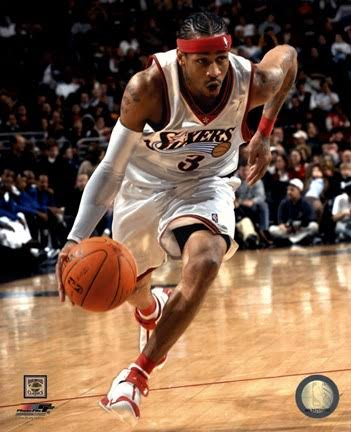

This is my All Time List of NBA Players with the Best Handles:
Rankings:
Kyrie Irving
#1 Kyrie Irving
Jamal Crawford
#2 Jamal Crawford

Allen Iverson
#3 Allen Iverson

This has poor contrast
![Kyrie Irving absolutely cooking a defender on the perimeter, hitting them with an insane in-and-out dribble, shifting his weight right, then pulling off a filthy behind-the-back crossover so fast and smooth that the defender literally loses their balance and slips, while Kyrie stays completely locked in, floating toward the rim for a ridiculous high-arching layup off the glass like its the easiest thing in the world, proving once again why his handle is completely unmatched by anyone who has ever touched a basketball.](images/Kyrie-Irving_Dribbling.jpeg)